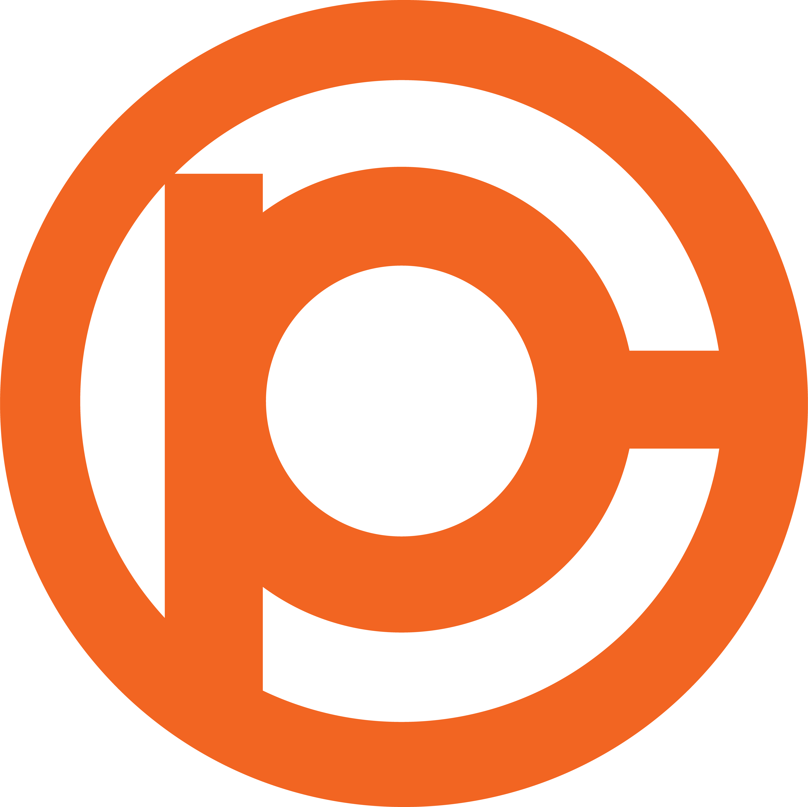

Panduan Manajemen Survei · PopuliCenter
Panduan praktis untuk admin & supervisor: dari membuat survei, menyusun 13 tipe pertanyaan, hingga mengatur percabangan (skip logic) agar setiap responden mendapat jalur yang tepat.
Sebuah survei melewati tiga status. Anda bebas menyusun pertanyaan selama survei masih Draft; setelah Aktif, perubahan pada pertanyaan harus dihindari karena memengaruhi data yang sudah masuk.
Tambah/ubah/hapus pertanyaan bebas. Atur kuota per surveyor. Survei belum bisa diisi TPD.
TPD mulai mengisi via aplikasi. Nomor kuesioner otomatis berjalan. Jangan ubah struktur pertanyaan.
Berhenti menerima respons. Data siap dilihat di Laporan, diekspor, atau ditayangkan.
Gandakan survei sebagai Draft baru untuk gelombang berikutnya, lalu sesuaikan.
Urutan yang disarankan: Buat survei (Draft) → susun pertanyaan → tetapkan kuota surveyor → Aktifkan. Pertanyaan disusun di halaman Builder survei.
Sebelum menyusun pertanyaan, buat dulu "wadah" surveinya. Dari halaman Survei, klik Buat Survei — survei baru selalu lahir sebagai Draft.
Dari baris survei di daftar, tersedia aksi berikut:
| Aksi | Kapan & efeknya |
|---|---|
| Kelola pertanyaan | Buka Builder untuk menambah/menyusun pertanyaan. Bebas selama status Draft. |
| Ubah info | Sunting judul, deskripsi, tipe, dan periode survei. |
| Aktifkan | Draft → Aktif. TPD mulai bisa mengisi. Setelah ini hindari mengubah struktur pertanyaan. |
| Nonaktifkan | Aktif → Nonaktif. Berhenti menerima respons; bisa diaktifkan kembali sewaktu-waktu. |
| Duplikat | Menyalin seluruh pertanyaan ke survei Draft baru — untuk gelombang berikutnya. |
| Hapus | Hanya untuk Draft yang belum punya respons. Survei yang sudah terisi tidak bisa dihapus. |
Batasan berapa responden yang boleh diisi tiap TPD diatur lewat kuota surveyor. Tetapkan sebelum atau selama survei aktif — submit dari TPD akan mengikuti kuota yang berlaku.
Di halaman Builder, setiap pertanyaan dibuat dengan pola yang sama. Untuk tipe pilihan, Anda menambahkan daftar opsi jawaban.
Pengambilan foto, rekaman audio, tanda tangan, dan lokasi GPS diatur di Pengaturan Alat Lapangan (Field Tools) survei — bukan sebagai pertanyaan. Kecuali tipe Upload Foto yang memang bisa jadi pertanyaan tersendiri.
Pilih tipe yang paling sesuai dengan bentuk data yang ingin dikumpulkan. Kolom "Kapan dipakai" membantu memilih cepat.
| Tipe | Kapan dipakai | Konfigurasi |
|---|---|---|
Pilihan Tunggalsingle_choice | Satu jawaban dari daftar (mis. jenis kelamin, pilihan sikap). | Daftar opsi · "Lainnya" · acak opsi |
Pilihan Gandamultiple_choice | Boleh lebih dari satu jawaban (mis. sumber informasi yang dipakai). | Daftar opsi · "Lainnya" · acak opsi |
Teks Pendekshort_text | Jawaban singkat satu baris (mis. nama, kota). | — |
Teks Panjanglong_text | Jawaban bebas/paragraf (mis. saran, alasan). | — |
Skala Numeriknumeric_scale | Angka pada rentang tetap (mis. usia, skor 0–10). | Nilai min & maks · label ujung skala |
Rating Scalerating_scale | Penilaian berskala (mis. kepuasan 1–5). | Nilai min & maks · label ujung |
Tanggaldate | Tanggal (mis. tanggal lahir, tanggal kejadian). | Format YYYY-MM-DD · batas min/maks (opsional) |
Waktutime | Jam (mis. waktu wawancara), format 24 jam. | Format HH:mm |
Nomor Teleponphone_number | Nomor telepon (hanya angka). | Batas panjang minimum/maksimum |
Nomor Kuesioner Unikunique_id | ID unik per responden — mencegah data ganda & jadi bagian nomor kuesioner. | Batas panjang · dicek unik per survei |
Upload Fotophoto | Surveyor mengambil/mengunggah foto sebagai jawaban. | — |
Matrix / Gridmatrix | Beberapa pernyataan dinilai pada skala yang sama (hemat tempat). | Daftar baris (pernyataan) · skala kolom |
Wilayah Indonesiaindonesia_region | Pilih wilayah bertingkat: Provinsi → Kab/Kota → Kecamatan → Desa. | Kedalaman wilayah · data lokal (tanpa internet) |
Untuk data yang akan dihitung/ditayangkan (grafik, peta), gunakan tipe pilihan, skala, matriks, atau wilayah — bukan teks bebas. Teks panjang & foto dikecualikan dari agregat publik demi privasi.
Tiga sakelar kecil yang berpengaruh besar pada kualitas & keluwesan pengisian.
Pertanyaan wajib harus dijawab sebelum data bisa disimpan. Validasi berjalan di aplikasi dan di server. Penting: pertanyaan wajib yang tersembunyi oleh percabangan tidak akan menghambat submit (lihat bagian 05).
Mengacak urutan tampilan opsi jawaban per responden untuk mengurangi bias urutan. Yang diacak hanya tampilan; nilai jawaban tetap sama, sehingga percabangan & hasil tetap konsisten.
Menambahkan opsi "Lainnya…" pada pertanyaan pilihan, sehingga responden bisa menuliskan jawaban di luar daftar. Aktifkan bila daftar opsi mungkin tidak mencakup semua kemungkinan.
Percabangan membuat responden hanya melihat pertanyaan yang relevan dengan jawabannya. Modelnya: daftar pertanyaan berurutan + aturan "lompat". Ketika sebuah aturan menyala, pertanyaan di antara sumber dan tujuan disembunyikan.
Q1–Q12 pertanyaan inti (demografi + topik) Q13 PEMICU — "isu paling penting?" ├─ Ekonomi → Q14 → Q15 → Q16 ─┐ ├─ Pemerintah → Q17 → Q18 ───────┤→ Q20 penutup → SIMPAN └─ Media → Q19 ─────────────┘
Setiap cabang berisi pertanyaan berbeda, lalu semua bertemu di pertanyaan penutup bersama sebelum disimpan. Aturan yang dipasang pada contoh di atas:
| Pasang di | Jika jawaban… | Lompat ke | Efek |
|---|---|---|---|
| Q13 | Q13 = "Kinerja pemerintah" | Q17 | sembunyikan Q14–Q16 |
| Q13 | Q13 = "Kualitas media" | Q19 | sembunyikan Q14–Q18 |
| Q16 | Q13 = "Kondisi ekonomi" | Q20 | akhir cabang ekonomi — sembunyikan Q17–Q19 |
| Q18 | Q13 = "Kinerja pemerintah" | Q20 | akhir cabang pemerintah — sembunyikan Q19 |
Setiap cabang wajib punya aturan lompat ke pertanyaan penutup di pertanyaan terakhirnya, agar pertanyaan cabang lain tersembunyi. Jika lupa, pertanyaan wajib cabang lain akan dianggap "belum dijawab" dan submit tertahan.
Hanya lompat maju (tujuan berada setelah sumber dalam urutan). Semua jalur akhirnya bertemu di pertanyaan penutup bersama. Tata urutan pertanyaan dengan cermat: cabang harus berupa blok berurutan.
Isi survei percobaan sekali untuk setiap pilihan pemicu. Pastikan pertanyaan yang muncul benar dan submit berhasil tanpa error "wajib belum dijawab".
Untuk survei besar, susun pertanyaan di file JSON lalu unggah sekaligus — lebih cepat daripada satu per satu.
{ "questions": [ … ] }. Tiap pertanyaan minimal punya text dan type; opsional is_required, options, randomize_options, allow_other..json, tinjau, lalu konfirmasi.Aturan skip logic tidak dibawa oleh file import — karena aturan merujuk ID pertanyaan yang baru terbentuk setelah import. Jadi pasang percabangan secara manual di Builder setelah pertanyaan berhasil di-import.
Ringkasan hal yang paling sering menyelamatkan (atau merusak) sebuah survei.
Selesaikan & uji seluruh struktur saat masih Draft · gunakan unique_id bila perlu mencegah responden ganda · pilih tipe pilihan/skala untuk data yang akan dianalisis · uji tiap jalur percabangan · tetapkan kuota surveyor sebelum aktivasi.
Mengubah opsi/urutan/tipe pertanyaan setelah survei Aktif (merusak keselarasan data yang sudah masuk) · lupa aturan "lompat ke penutup" pada cabang · membuat pertanyaan wajib pada cabang tanpa menyembunyikan cabang lain · mengandalkan teks bebas untuk data yang ingin dihitung.